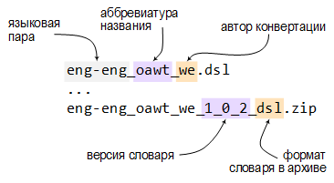
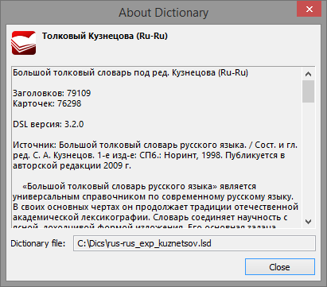
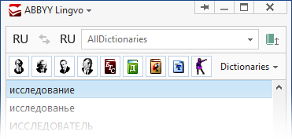

Словарь синонимов (Ru-Ru)
карточкафотография, снимок; визитка

Словарь в формате DSL – это электронный словарь, состоящий из нескольких отдельных файлов, как правило четырёх: основного текста, аннотации, иконки и списка аббревиатур. Имена файлов должны быть одинаковыми, за исключением расширений. Таковой является основная, базовая комплектация словаря, из которой, впрочем, только основной текст является обязательной частью, а остальные три могут не использоваться.
Словарь DSL нельзя подключить к программе ABBYY Lingvo непосредственно, для этого его нужно преобразовать в словарь LSD. Процесс преобразования называется компиляцией. При компиляции данные из исходных файлов объединяются, сжимаются, кодируются и помещаются в один результирующий контейнер – файл *.lsd.
Дополнительно DSL словарь может содержать иллюстрации, звуковые и видео материалы. Файлы мультимедиа, соответствующие этому содержимому, именуются свободно и располагаются в одной папке с основными файлами. Чтобы медиа-файлы отобразились в результирующем словаре LSD, с ними нужно поступить одним из двух следующих способов.
Программа GoldenDict работает по-другому: к ней словари DSL можно подключать напрямую, без дополнительных преобразований. Мультимедиа файлы при этом необходимо упаковывать в отдельный zip-архив, имя которого должно повторять имена других файлов словаря с прибавлением окончания *.dsl.files.zip. Например, rus-rus_encyclopedia_we.dsl.files.zip.
Далее в настоящем разделе собраны сведения о правилах создания и устройстве каждого из четырёх файлов DSL словаря. Часть этих сведений, в основном общего характера, опубликована в официальном справочном руководстве к программе ABBYY Lingvo. Остальная часть была сформулирована или разработана стараниями сообщества лексикографов на компьютерном портале Ru-Board.
В официальной справке к Lingvo вопрос наименований файлов не затрагивается. Этот пробел восполняется «Соглашением о наименованиях», составленным сообществом лексикографов на Ru-Board. В соответствии с «Соглашением» в именах файлов словарей принято указывать:
Полный список 3- и 2-буквенных сокращений см. в разделе «Списки языков».
Если словарь предназначен для распространения и упакован в архив, то в наименовании архива следует также указать номер версии словаря и его формат (обычно DSL или LSD).
Примечание: «Соглашение» рекомендует указывать версию также и в именах файлов словаря. Однако составитель справочника придерживается мнения, что такая практика создаёт неудобства при подключении словарей к программе. Изменение имён файлов с каждой новой версией потребует многократного отключения старых и подключения новых файлов через диалоги настроек программы. В то время как при сохранении единого имени, каждую новую версию достаточно всего лишь перезаписывать поверх старой. Программа, обнаружив при старте обновлённый файл, будет только автоматически перестраивать индекс.
В именах файлов следует употреблять только символы основной латиницы, знаки дефиса и подчёркивания. Настоятельно не рекомендуется употреблять пробелы, диакритические знаки, апострофы, точки, запятые, двоеточия и символы национальных алфавитов (в т.ч. русского), т.к. технически это может существенно затруднить как использование словарей, так и их пересылку. Например, пробелы, апострофы и диакритика некорректно обрабатываются некоторыми программами (в первую очередь сетевыми), а точка в имени файла иконки может привести к тому, что иконка не будет отображаться.

На рисунке приведён пример наименования файла англо-английского словаря «Oxford American Writer Thesaurus», отконвертированного в формат DSL лексикографом weros. Как видно, версия словаря указана только в имени zip-архива.
Очевидно, что наличие этой части словаря строго обязательно, в отличие от других трёх частей.
Файл основного текста словаря – это простой текстовый документ в кодировке ANSI или Unicode (UTF-16 LE)[1]. Строки должны оканчиваться управляющим символом перевода строки LF, т.е. допустимы окончания строк, принятые в системах Windows (CRLF) и Unix (LF)[2], но недопустимы принятые в системе Mac (CR). При сохранении, стандартное расширение файла *.txt необходимо поменять на *.dsl. Например: rus-rus_ExplanatoryKuznetsov.dsl.
Файл основного текста состоит из словарных статей с заголовками – собственно это и есть сам словарь. В первых трёх строчках файла должны содержаться три обязательные директивы предварительной обработки. Принят следующий порядок их следования и оформления:
О других существующих директивах можно узнать в главе «Директивы предварительной обработки».
Первые три строчки (шапка) основного файла :: Запись в DSL
#NAME "Словарь синонимов (Ru-Ru)" #INDEX_LANGUAGE "Russian" #CONTENTS_LANGUAGE "Russian" карточка [m1]фотография, снимок; визитка[/m]
После того, как словарь будет подключен к Lingvo, его «внутреннее» название, указанное в первой директиве, будет отображаться в правой, верхней части словарных карточек и во всех списках подключенных словарей. Это название должно быть кратким для того, чтобы оно лучше воспринималось и умещалось в упомянутых местах. В конце названия рекомендуется указывать языковую пару словаря в скобках через дефис. В словарях от ABBYY, поставляемых вместе с Lingvo, пары языков обозначаются 2-буквенными сокращениями, согласно стандарту ISO-639-1. «Соглашение» лексикографов в данном случае предписывает использовать 3-буквенные сокращения, по стандарту ISO-639-3 (или ISO-639-2).
Следующие две директивы содержат английские наименования языков, на которых написаны заголовки и статьи словаря. Эти наименования должны: a) числиться в списке поддерживаемых в Lingvo языков и b) соответствовать стандарту ISO-639-2. Если указать неподдерживаемый язык, то компилятор DSL выдаст ошибку и словарь не будет откомпилирован. Первую часть этого правила можно не учитывать в том случае, если словарь изначально предназначен для использования в альтернативных программах, например, в GoldenDict. Вторую часть желательно учитывать в любом случае.
Первые три строчки (шапка) основного файла :: Вид в словарной карточке
Далее следуют заголовки и текст словарных статей. Подробнее о них см. в главе «Структура словарной статьи».
Файл аннотации – это простой текстовый документ в кодировке ANSI или Unicode (UTF-16 LE)[1]. Строки должны оканчиваться управляющим символом перевода строки LF, т.е. допустимы окончания строк, принятые в системах Windows (CRLF) и Unix (LF)[2], но недопустимы принятые в системе Mac (CR). При сохранении, стандартное расширение файла *.txt необходимо поменять на *.ann. Имя файла аннотации должно в точности соответствовать имени файла основного текста, за исключением расширения. Например: rus-rus_ExplanatoryKuznetsov.ann.
Аннотация не является обязательной частью словаря, правила допускают её отсутствие. Тем не менее создание аннотаций настоятельно рекомендуется.
Содержанием аннотации является краткое описание словаря, характеристики его состава и сведения об авторах. «Соглашение» считает обязательным указывать в аннотации следующие данные:
Пример обязательной информации :: Запись в ANN
Большой толковый словарь под ред. Кузнецова (Ru-Ru) DSL версия: 3.2.0 Заголовков: 79109 Карточек: 76298 Источник: Большой толковый словарь русского языка. Сост. и гл. ред. С. А. Кузнецов. 1-е изд-е: СПб.: Норинт, 1998. Публикуется в авторской редакции, 2009 г.
Кроме того по желанию можно добавлять:

При подключении словаря к Lingvo, аннотация отображается в отдельном окне «О словаре», доступном из разных меню программы. К тексту аннотации в этом окне не применяется форматирование и в нём нельзя изменить размер шрифта. Поэтому не рекомендуется включать в её состав длинные предисловия и введения из источников. Лучше размещать таковые в файле основного текста в качестве дополнительных статей, а в аннотации ссылаться на их заголовки.
Также как и в карточках, из текста аннотации автоматически удаляются множественные пробелы. В связи с этим, для создания отбивок и отступов в абзацах, рекомендуется использовать неразрывные или экранированные пробелы. Подробнее об этом см. в главе «Тело статьи».
Кроме того, в аннотациях предусмотрена к использованию директива предварительной обработки #LANGUAGE, в качестве значения которой указывается полное английское наименование языка по стандарту ISO-639-3. Эта директива условно делит аннотацию на части. Одной частью считается фрагмент текста от одной строки с директивой до другой строки с директивой или до конца файла. Каждой части присваивается язык, указанный в значении её директивы.
Употребление директив :: Запись в ANN
#LANGUAGE "Russian" LatinAmerican (Es-Ru) (к версии ABBYY Lingvo x5) Испанско-русский словарь. Латинская Америка. © «Русский язык-Медиа», 2004, Фирсова Н.М. 50 тыс. слов и словосочетаний. #LANGUAGE "English" LatinAmerican (Es-Ru) (for ABBYY Lingvo x5) The Spanish-Russian Dictionary of Latin America. © Russkiy Yazyk - Media, 2004, N.M. Firsova. 50,000 words and phrases. #LANGUAGE "Ukrainian" LatinAmerican (Es-Ru) (до версії ABBYY Lingvo x5) Іспансько-російський словник. Латинська Америка. © «Русский язык-Медиа», 2004, Фірсова Н.М. 50 тис. слів і словосполучень.
В зависимости от языка интерфейса, выбранного в настройках программы, в окне аннотации будет отображаться соответствующий языковая часть, а части других языков будут скрыты. Выбор языков для употребления в значениях директивы ограничен набором языков интерфейса конкретной версии Lingvo. Например, в Lingvo x6 доступны четыре языка: английский, русский, украинский и казахский. А в Lingvo x5 был ещё испанский.
Описанная директива работает в Lingvo, но в других программах она может не поддерживаться, как например в GoldenDict.
Имя файла иконки должно в точности соответствовать имени файла основного текста, за исключением расширения. Например: rus-rus_ExplanatoryKuznetsov.bmp.
Сама иконка должна обладать следующими характеристиками:
| Формат файла изображения: | Windows Bitmap (*.bmp) |
| Размер изображения: | 14 x 21 пикселей (ширина на высоту) |
| Глубина цвета (битность) изображения: | 24 bit (Truecolor) |
Чтобы добиться эффекта «прозрачности» фона на картинке, необходимо закрасить его серым цветом RGB(192, 192, 192) или #C0C0C0.
При подключении словаря к Lingvo, иконка отображается на «полке со словарями» (панели кнопок в основном окне Lingvo) и в списках словарей (где они имеются). В GoldenDict употребление иконки более активно: в окне аннотации «О словаре», в окне заголовков, в диалогах настроек программы и др. местах.

Иконка не является обязательной частью словаря, правила допускают её отсутствие. Если иконки нет, то словарная программа присвоит словарю свою, стандартную иконку по умолчанию. Однако, создание индивидуальных иконок настоятельно рекомендуется, поскольку в противном случае словари на полке будут выглядеть однотипно и в них будет легко запутаться.
Примеры стандартных иконок для словарей: в ABBYY Lingvo и в GoldenDict .
Файл аббревиатур – это простой текстовый документ в кодировке ANSI или Unicode (UTF-16 LE)[1]. Строки должны оканчиваться управляющим символом перевода строки LF, т.е. допустимы окончания строк, принятые в системах Windows (CRLF) и Unix (LF)[2], но недопустимы принятые в системе Mac (CR). При сохранении, стандартное расширение файла *.txt необходимо поменять на *.dsl. Имя файла аббревиатур должно в точности повторять имя главного файла словаря с прибавлением в конце суффикса _abrv. Например: rus-rus_ExplanatoryKuznetsov_abrv.dsl.
Файл аббревиатур представляет собой электронный аналог таких разделов бумажных словарей, как «Условные сокращения» или «Список аббревиатур». Содержанием файла является небольшой, вспомогательный словарик аббревиатур и сокращений, используемых в основной части словаря. Вызов информации из этого словарика возможен только в основной части словаря, при наведении курсора мыши на слово, заключенное в тэг [p]···[/p]. Расшифровка сокращения или аббревиатуры при этом показывается во всплывающей подсказке. Другого способа отобразить содержимое файла (например, в виде карточек) не существует.
Подобно файлу основного текста словаря, файл аббревиатур должен начинаться с трёх строчек – директив предварительной обработки. Однако применение этих директив в данном случае является в большой степени формальностью, поскольку имя, указанное в директиве #NAME нигде не отображается, а указание языков в следующих двух директивах ни на что не влияет. Таким образом, для всех файлов аббревиатур может быть использована универсальная «шапка» следующего вида:
Пример универсальной «шапки» для файлов аббревиатур :: Запись в DSL
#NAME "List of Abbreviations (Ru-Ru)" #INDEX_LANGUAGE "Russian" #CONTENTS_LANGUAGE "Russian" разг. разговорное ср. 1) средний род; 2) сравни страд. страдательный залог
Файл аббревиатур не является обязательной частью словаря, правила допускают его отсутствие. Необходимость в его создании полностью зависит от использования в словаре тэга [p]···[/p] – если тэга нет, значит и вспомогательный список к нему не нужен.
Предназначение содержимого файла для показа только во всплывающих подсказках влияет на правила его оформления. Эти особенности отображены в примере выше, поясним их:
Файл аббревиатур, входящий в комплект словаря DSL, является локальным. Кроме него в Lingvo существует ещё глобальный файл аббревиатур, который располагается в каталоге c:\Program Files\ABBYY Lingvo ??\, где ?? – номер версии Lingvo. Глобальный файл аббревиатур является общим для всех системных словарей Lingvo, но к нему программа обращается также и в том случае, если не находит локального. В GoldenDict глобальный файл аббревиатур не используется.
[1] Программа GoldenDict работает также с кодировкой UTF-8.
[2] При использовании окончаний строк, принятых в системах Unix (LF), размер словаря (текстового файла) уменьшается.